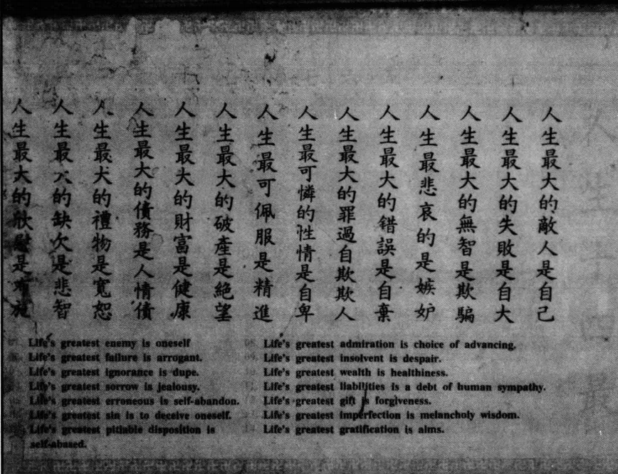

文化社群
很多自梳女虽然不婚，其实无法完全摆脱父权体系的内化和影响，包括当代许多女性也是，因为它实在是太根深蒂固了。
但是自梳女带有很强的集体性，这种内心的矛盾，也被彼此抱团的机制稍微消解了一些。在姑婆屋里面，她们其实是自在的，她不需要跟别人再解释，我为什么自梳，也不需要因此去防备谁，去取悦谁。 蒲潇月
缫丝女工：顺德缫丝业中的坚韧身影
红蚕成茧女工忙，相约缫丝过别庄。
朝去幕回纷彩伴，沿衍风送鬓云香。 龙江竹枝词(转引自《基塘颂》，载《顺德风采》编写组编：《顺德风采》，广东：人民出版社，1986，第32页)
一寸柔肠万缕丝，分明情绪似缫丝。
丝长丝短有时尽，别有缠绵无尽时。 缫丝词(转引自陈永正编：《顺德诗萃》，广东：人民出版社，2005，第197页)
（一）辛勤劳作的产业主力军
19 世纪末，广东顺德的蚕丝业蓬勃发展，缫丝厂成为当地经济的发动机，也为众多女性提供了工作机会。从 1881 年至 1911 年，顺德地区先后涌现出一百四十多家机器缫丝厂。这些工厂中，除广利和丝厂和德吕纶丝厂分别有 30 名和 16 名男性工人外，其余各厂几乎全是女性工人。按此估算，这期间约有 8 万年轻女工投身于缫丝行业，而男性仅占职工总数的不足二十分之一，且多为管理人员。
这些缫丝女工大多来自本乡镇或邻近地区，她们此前她们有的原来自行手工缫丝，有的专事养蚕，平日不离蚕茧，因此学习蒸汽缫丝技术并不困难。由于多数女工家庭离丝厂较近，她们虽寄住在厂内，仍能兼顾家中农活。女工的年龄主要集中在十三四岁至二十三四岁之间，少数在二十七、八岁左右，其中二十五岁以上的女工，十之八九是自梳女，且绝大多数未婚。
为什么会出现这样的现象？一方面，缫丝厂的工作条件十分艰苦。女工们每天工作时长高达十一个半小时，每周工作 7 天。在这种高强度、高压力且环境恶劣的工作环境下，女工们的健康状况迅速恶化。年纪较大的女工往往难以达到工作标准，通常只有三十岁以下的妇女才适宜在缫丝厂工作。一旦超过这个年龄，她们就会被迫离开缫丝厂，前往报酬较低的丝织业谋求工作。
另一方面，丝厂对已婚妇女也不太欢迎，认为她们因家庭和子女分散精力，工作效率低，会压低其工资。对于孕妇，丝厂不仅没有产假和工资，还会直接开除，导致她们失业。在 13 - 25 岁这个农村女性的适婚年龄，许多人为了保住工作、维持生计，不得不选择不结婚。而对于超过 30 岁还未结婚的大龄女性来说，找到合适的婚姻对象更是难上加难。在这样的情况下，众多缫丝女工选择 “自梳” 不嫁，缫丝厂也成为自梳女最为集中的地方，她们的生活也在一定程度上反映了自梳女群体的生活状态。
总而言之，“自梳女”们凭借自己的辛勤劳动，实现了经济独立，为顺德蚕丝业的发展贡献了重要力量，成为那个时代产业发展的巾帼主力军。
（二）街巷中的 “乌衣队”
缫丝女工常穿着黑胶绸或黑竹纱衫裤，因此被人们称为 “乌衣队”。她们走在顺德的街巷中，成为一道独特的风景线。在传统观念束缚的时代，她们以实际行动展现了女性的独立与自信，打破了社会对女性的刻板印象，开启了别样的人生。
尽管缫丝女工们凭借劳动获得了一定的经济收入，但其光鲜的衣着无法掩盖她们苍白而憔悴的面容。女工们如此辛劳，是由于自身负有许多经济上的责任。她们知道自己赚钱最多的时候是在三十岁左右。过了这个年龄，她就只能到报酬很低的丝织作坊去找工作，她们还考虑到，自己既无丈夫，也无孩子，退休之后就无人照料。因此，在一生的黄金时期，必须最大限度地榨干自己，以赚取更多的钱。人们普遍承认，女工们是非常俭朴的，总是尽量节省，看上去营养不良，健康状况很差。由于脸色异常苍白，当地人时常把她们叫做“女鬼”。
从事缫丝工作的自梳女们生活极为艰苦，她们曾描述自己的工作：“操的是军重的手织机,织上三个钟头全身的衣服能拧下一大把汗水。一天要干上十多个钟头,吃在机旁、睡在机顶,还动不动挨打受骂。”逢年过节，“自梳女” 们有家不能回，只能靠拼命织绸来排解心中的凄凉悲苦。她们吃的是芋头粥、五彩饭，不少人贫病交加，最终死于机旁。工人们编的顺口溜 “交货交钱出马路，手拿纸袋去买粮，酒杯装油油不满，豆渣烂菜一把抓”，便是她们生活的真实写照。
面对资本家的残酷剥削和压迫，缫丝女工们也曾进行小规模的反抗。但为了维持经济独立，她们的反抗并不彻底。只要丝厂支付较高工资，她们的阶级意识就难以发展，不会与资本家进行激烈的阶级斗争。此外，资本家还利用封建宗族关系，以全家 “出族” 为威胁，要女工的父亲、兄弟迫使她们脱离女工组织，甚至声称要将罢工骨干捉入猪笼扔下海，以维护所谓的 “族规”。在这种压力下，女工们大多选择逆来顺受，最终以牺牲自己一生的幸福为代价，换取微薄的自由和独立。
（三）丝业衰败后的艰难抉择
20 世纪 30 年代，世界性经济危机爆发，加上民族资本主义工业的畸形发展，顺德丝业遭受重创，全线崩溃。在经济危机前，顺德丝厂全盛时约有 145 家，到 1929 年底减少至 99 家，1932 年仅有 39 家，1934 年更是锐减到 24 家（全省丝厂在全盛时约 202 家，1934 年只剩 39 家）。同时，广东南海和顺德两县的丝巾和丝帕出口额从 800 多万银元大幅降至不足 200 万银元，约10万农村妇女因此失去生计，其中包括大量缫丝女工。
失去工作的缫丝女工们不得不另谋出路。一些人选择回归传统家庭生活，由于生活所迫，她们希望嫁到条件较好的人家，以便日后有所依靠。然而，多数女工青春已逝，年纪偏大，很难找到合适的对象，只能降低标准，“贬价而从”。只要是不用为吃饭穿衣发愁的家庭，仅需8-10元钱，就可以将自梳女娶进门。还有不少女工彷徨无计，选择出外谋生。有的前往城市成为家庭佣人，有的远渡重洋，到马来亚、新加坡、越南等地当 “使妈”，甚至有少数自梳女因生活所迫走上了卖淫的道路。
南洋妈祖与凤城梳佣：海外谋生的别样人生
（一）离乡逐梦，奔赴南洋
20 世纪 30 年代，华南丝业受到沉重打击，顺德农村经济陷入困境。为了谋求生存，众多自梳女背井离乡，乘坐客船前往南洋。她们怀揣着对未来的憧憬和对家乡的眷恋，像勇敢的候鸟一样，奔赴遥远而陌生的国度，开启充满挑战的南洋之旅。
自梳女出洋佣工主要集中在东南亚国家，如新加坡、马来西亚、泰国、越南等地。在这些国家的家庭佣工中，有相当数量是 “过埠姑婆”，即出洋谋生的自梳女。仅前往东南亚各地的自梳女就达二三千人之多。仅顺德均安沙头乡，前往新加坡的自梳女就超过百人。
（二）妈姐风华，南洋流芳
抵达南洋后，大多数自梳女成为 “妈姐”，在当地富裕人家操持家务。她们凭借勤劳能干的品质和出色的厨艺，赢得了雇主们的认可与尊重，“顺德妈姐” 也成为当时南洋家政服务的金字招牌。清末民初时期, 在新加坡男女比例严重失调、娼妓业发达的情况下，自梳女们仍然坚守其不婚的信念，保持“冰清玉洁”之躯，这是她们对其自身文化成功调适的结果。她们的故事在异国他乡的街巷中流传，成为一段独特的历史记忆，彰显了自梳女在南洋的坚韧与奉献精神。
自梳女成为家庭佣人，一方面是因为她们勤劳、节俭、肯吃苦，且没有家庭拖累，非常受欢迎；另一方面，也是由于她们自身能力有限。据调查，90% 的自梳女家境贫寒，自幼没有接受过正规的文化教育，几乎都是文盲。即便有少数识字的，也是在建国后的扫盲运动中学习的，所学内容多为民间歌诵木鱼书或《三字经》等。个别出身大户人家的自梳女，接受的也只是儒家传统礼教的 “三纲五常”“女诫” 等教育。
身处异国他乡的自梳女们也像以往一样建立互助性组织。当家庭佣人的自梳女们一般每月有初一、十五两天假期。为了维系姐妹情谊，她们会与同乡姊妹在假日里相聚，一起看电影、下馆子或逛街。她们还合伙集资购买了一间屋子，命名为 “超顺堂”，作为姐妹们聚会的场所。每人每月捐款，一年大约出一百多元新加坡币，用于维持 “超顺堂” 的开支。此外，还有一种名为 “咕哩” 房的聚会场所，“咕哩” 是广州话 “苦力” 的谐音，是几个要好的姐妹在外面合租的，以便在失业找不到工作时有个落脚之处。自梳女移民新加坡后，和其他华人一样，仍然十分重视祭祖、拜神等传统活动，多采用传统的牌位祭拜的方式祭祀先人的灵魂。
（三）凤城梳佣，服务豪门
除了成为 “妈姐”，还有一些自梳女到大城市里专门伺候大户人家的小姐、太太，被称为 “梳佣”。梳佣的装扮以黑色衣服为主，与其他佣妇不同，她们的主要工作是梳头理髻。梳佣大致可分为两种：一种是富家少奶特别雇佣的，这类梳佣不仅要技艺娴熟，而且要求貌美年轻，除了负责梳头，还兼职近身伺候，如铺床叠被、递衣奉烟等，薪金特别高，且常有丰厚的打赏；另一种是普通梳佣，分为搭头和散梳两种计费方式，搭头按月计工银，散梳按每次挽髻计费。普通梳佣还有一项副业，即担任随嫁妈。
研究热潮与现代想象
（一）学术探源，还原历史
如今，“自梳女”文化引起了社会的广泛关注。在以往的男权社会，女性绝不允许在娘家独身终老，更不用说死后将神位放在本村，并得到村民的祭拜。而在顺德均安镇沙头村的冰玉堂，去世的自梳女与神祗同席，逢年过节会得到村民的祭拜。在村民心中，自梳女和其他众神一样，能保佑乡里平安，因此冰玉堂也终年香火旺盛。这表明自梳女的社会角色与传统女性存在很大差异，具有重要的当代研究价值。
学者和记者们抓住“自梳女”文化的尾巴，从社会学、文化人类学、妇女史学、口述史学等多个角度深入研究这一独特文化现象。他们通过挖掘档案资料、走访健在的自梳女，努力还原“自梳女”的历史来源和生活样态，让这一逐渐被遗忘的群体重新走进人们的视野，为我们了解过去女性的生活与抗争提供了珍贵的材料。
除此之外，还有不少人将“自梳女”拍成纪录片，全方位地展现“自梳女”文化。1983年4月10日，梁妙霞导演的《自梳女》纪录片在中国香港上映，片长24分钟，使用粤语讲述“自梳女”的故事和文化特征。2010年，骆仪与伦敦大学金匠学院联合出品了纪录片《自梳》，其荣获2010英国Exposures电影节最佳纪录片提名、2011英国RTS皇家电视学会学生电视大奖，帮助“自梳女”文化走出国门。2024年7月14日，由艺术家浦潇月组织的“自梳Self Comb”团队与另一纪录片团队“搜朴纪录片实验室”合作，一同前往广东顺德的均安镇，寻访还在那里生活的自梳女，接过前人的接力棒继续讲述“自梳女”的故事。
（二）传承遗韵，文旅交融
“自梳女”文化不仅在学术研究领域备受关注，在文化传承和旅游开发方面也展现出独特价值。以冰玉堂为代表的物质文化遗产，吸引了众多游客前来参观。冰玉堂位于顺德均安沙头村，与普通的“姑婆屋”不同，它是由在新加坡当女佣的 400 多位自梳女和留在家乡的百余人集资兴建的，于 1951 年落成。它既具有传统 “姑婆屋” 的功能，是健在姑婆聚会生活的场所，也是她们死后的归宿地，受后人祭拜；同时，由于受到新加坡华人文化的影响，冰玉堂的性质发生了变化，成为当地的 “众神庙”，供奉着观音、关帝、华帝、济公、财神等神位，是一座集庙宇式和当地家屋式建筑为一体的两层建筑。
冰玉堂的偏殿中悬挂着一面镜框，上面书写着 “人生十四最”，且用中英双语呈现：“人生最大的敌人是自己，人生最大的失败是自大，……”这侧面展现了“自梳女”们的美好品质。这些地方通过展示 “自梳女” 的生活场景、遗物等，让游客亲身感受 “自梳女” 文化的魅力，既促进了文化的传承与传播，也为当地旅游发展增添了新的亮点。
（三）艺术凝情，展现新韵
在当代女性主义思潮兴起的背景下，“自梳女” 反抗父权的生活实践受到许多团队的关注。艺术家们积极运用现代数字技术传承 “自梳女” 文化，并在多地举办艺术展览，从多个维度、多种模态展现 “自梳女” 的精神世界和独特魅力。艺术家浦潇月于2020年创立名为《自梳》的艺术调研类项目，研究广东“自梳女”文化，并在各地举办了一系列的“自梳女”文化展览。这些艺术作品和展览丰富了艺术创作的题材，让更多人关注到 “自梳女” 这一特殊群体，以艺术的方式传承和弘扬自梳女文化，使其在现代社会中焕发出新的生机与活力。
然而，“自梳女”是否是中国最早的女性主义者这一问题值得深入思考。在当时的社会背景下，农村女性在恋爱、结婚、生育等方面受到严格的时间限制，缫丝女工在 15 - 35 岁这一阶段，将大量时间投入到工作中，导致婚姻、生育等活动的时间被 “挤压”，从而成为一辈子不嫁的独身女性群体。因此，认为自梳女是 “点燃中国女性解放的星星之火”“中国妇女解放的先驱” 等观点值得进一步商榷。她们采用这种极端压抑自己情感的方式，这种所谓的“自由”真是她们的世外桃源吗?